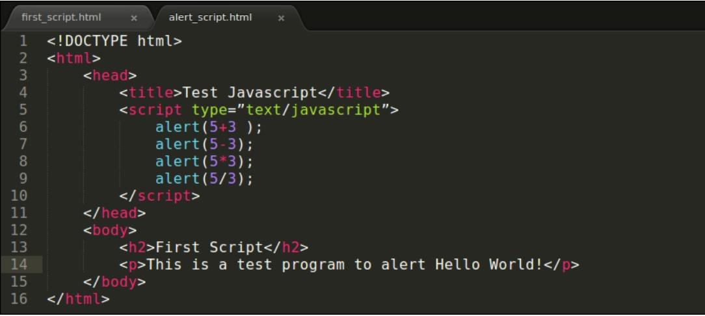

Variables en JavaScript
En JavaScript, las variables se utilizan para almacenar diferentes tipos de datos, como números, cadenas de texto, booleanos, objetos, etc. y se pueden declarar utilizando las palabras clave var, let y const.
La palabra clave var se usaba antes para declarar variables en JavaScript, pero a partir de ES6, se recomienda utilizar let y const.
La palabra clave let se utiliza para declarar variables mutables, que pueden cambiar de valor más tarde en el código.
La palabra clave const se utiliza para declarar variables inmutables, que no pueden cambiar de valor después de ser inicializadas.
Reglas generales para nombrar variables en JavaScript:
- Las variables deben comenzar con una letra, un guión bajo (_) o un signo de dólar ($).
- Los nombres de las variables pueden contener letras, números, guiones bajos o signos de dólar.
- Es una buena práctica utilizar nombres descriptivos para las variables que sean fáciles de entender.
- Los nombres de las variables deben ser sensibles a las mayúsculas y minúsculas. Esto significa que "miVariable" y "mivariable" son dos variables diferentes.
- Evitar utilizar palabras reservadas de JavaScript como nombres de variables. Estas palabras reservadas son aquellas que el lenguaje utiliza para realizar acciones específicas y no se pueden utilizar como nombres de variables. Por ejemplo, "if", "else", "function", etc.
- Utilizar una convención de nomenclatura coherente en todo el código. Se puede utilizar la convención "camelCase" para nombrar variables, donde la primera palabra se escribe en minúscula y cada palabra adicional se escribe con la primera letra en mayúscula, como "miVariableEjemplo".
Al nombrar variables en JavaScript, es importante utilizar nombres descriptivos y coherentes que sean fáciles de entender y seguir las convenciones de nomenclatura establecidas para el lenguaje.
Análisis de un ejemplo
El programa muestra cuatro ventanas emergentes, una tras otra, con sus respectivos valores. Un problema evidente es que estamos utilizando repetidamente los mismos números en varios lugares. Si tuviéramos que realizar estas operaciones aritméticas en un conjunto diferente de números, tendríamos que reemplazarlos en múltiples lugares. Para evitar esta situación, debemos asignar esos números a ubicaciones de almacenamiento temporales que se denominan variables.
Al declarar una variable usando la palabra clave var seguida del nombre de esa variable, se proporciona implícitamente al nombre una porción de la memoria de la computadora, que utilizaremos durante la ejecución del programa.
